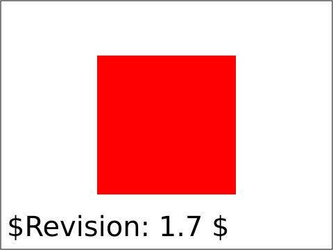

struct-defs-01-t |
||
| SVG Image | INKSCAPE Image | PNG Image |
|  |

|
|
|
||||||||||||
Test to verify that the defs element is used as a container correctly.
In this test a fill is created which is solid red. The view should be a solid red rectangle centered in the viewport 100 pixels from from left,top and right,bottom. Also, in the defs sections there are rectangle defined, one to paint over the entire canvas with a green fill and the other to obscure most of the red rectangle. The green rectangles should not show in the view as defs are referenced items and are not rendered. No green should show.
The rendered picture should match the reference image, except for possible variations in the labelling text (per CSS2 rules).
The test uses the 'rect' element, as well as basic fill (solid primary colors), stroke (black 1-pixel lines), font-family (Arial) and font-size properties.